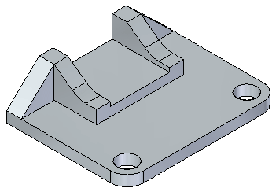
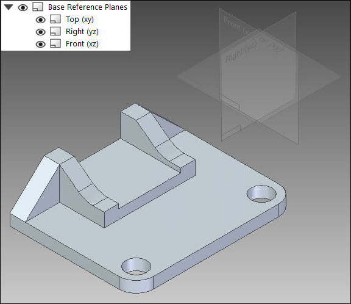
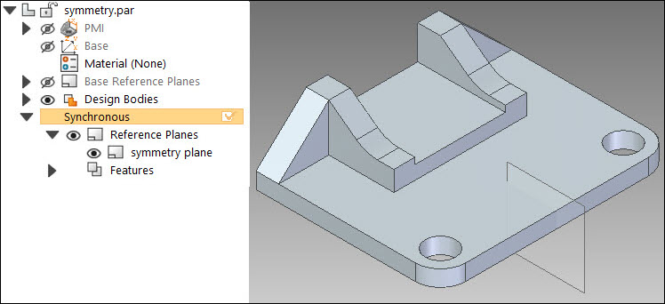
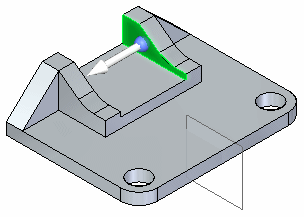
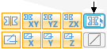
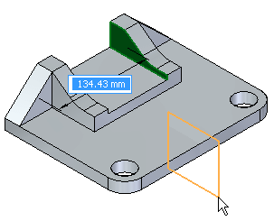
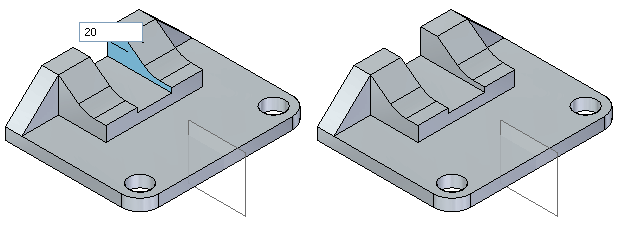
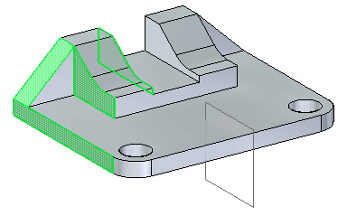
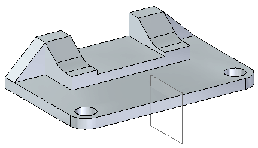

Activity: Detecting symmetry relationships
Learn how to detect local symmetry during a synchronous modification.
-
Open symmetry.par.

Turn on the base reference planes. Observe that the model was not designed symmetrically about the base reference planes. In PathFinder, click the check box for the three base planes.

Turn off the base reference planes.
The model was not designed symmetrically about the base planes. However, a symmetry plane was used to mirror features.
Turn on the plane used for symmetry. In PathFinder, click the Show/Hide button for the plane named symmetry plane.

Select the face shown and then move it to observe the results. Only the selected face moves. Do not click.

Press the Escape key.
Click the move handle again.
This time we want to detect symmetry. On the Advanced Design Intent panel, click the Local Symmetry button.

Select the symmetry plane shown.

Notice that as you move the selected face, the symmetric face also moves. Type 20 in the dynamic input box and then press the Enter key. Press the Escape key to end the move command.

Select the faces shown.

Move the select set of faces a distance of 30. Select the detect local symmetry button to make a symmetric move. Select the plane named symmetry plane.

In this activity you learned how to detect symmetry about a plane that is not a base reference plane. The symmetric about relationship is automatically persisted.
-
Close the file and do not save.
-
Click the Close button in the upper-right corner of the activity window.